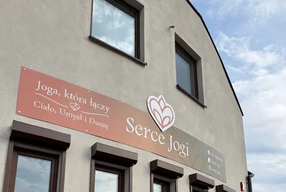
02
Lokal nr 2
52 m² · parter · studio jogi
Wynajęty
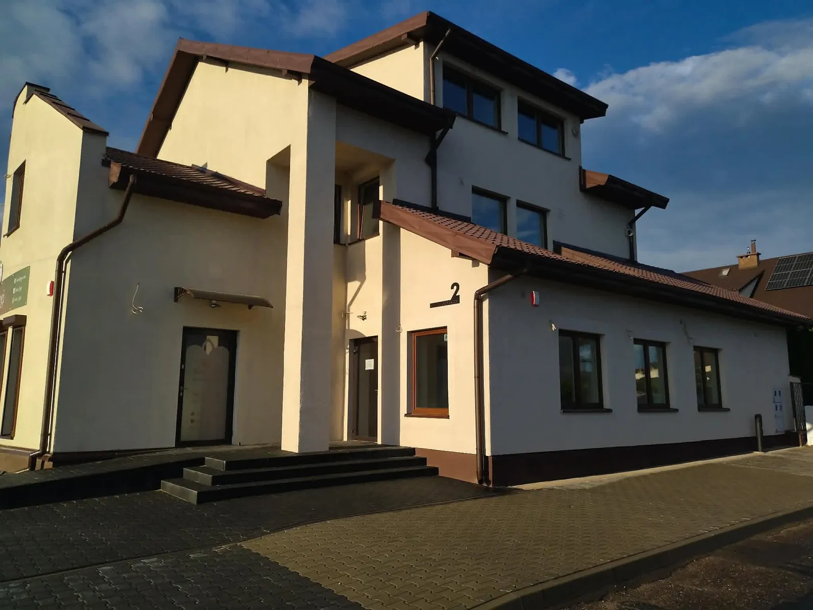
ul. Chodkiewicza 2 · Osiedle Hetmańskie · 98-200 Sieradz
Budynek mieszkalno-usługowy na Osiedlu Hetmańskim w Sieradzu. Cztery lokale — dwa mają już właścicieli, dwa są wolne i dostępne od zaraz.
Dostępne teraz
Obie znajdują się w tym samym budynku przy ul. Chodkiewicza 2 w Sieradzu. Poniżej komplet danych: metraż, cena, wyposażenie, rzuty i zdjęcia — bez dopytywania.
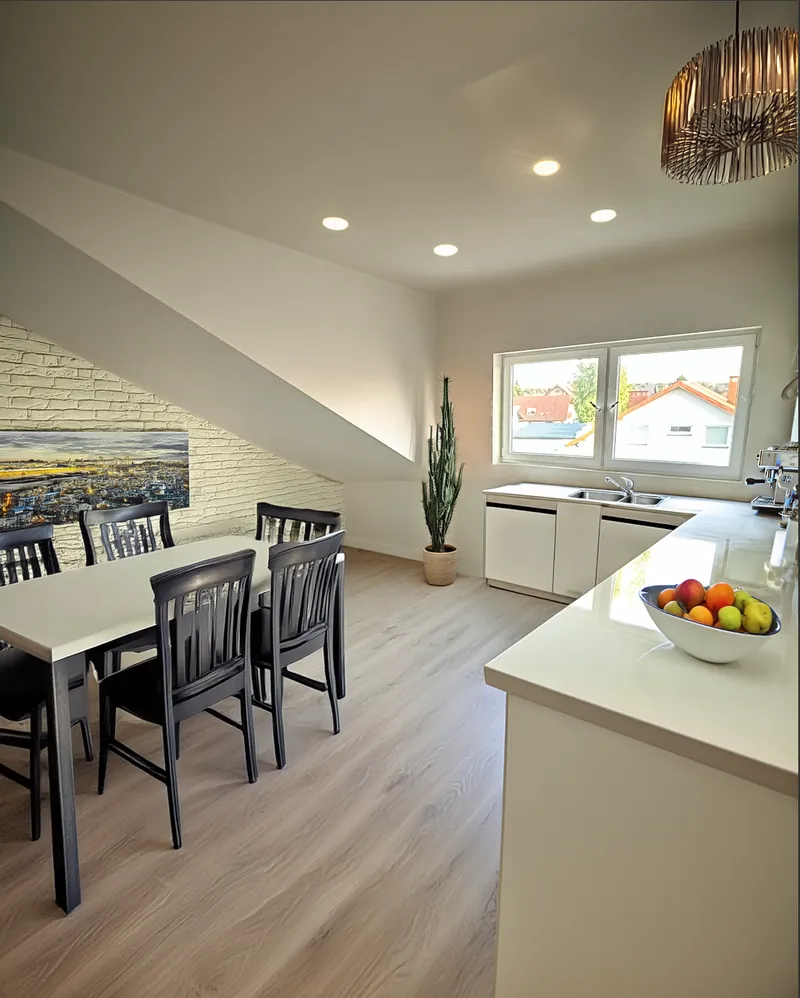
Na sprzedażStan deweloperski. Salon z aneksem kuchennym 30,5 m², trzy sypialnie, garderoba i dwie łazienki. Ogrzewanie podłogowe na gaz ziemny, okna KBE trzyszybowe.
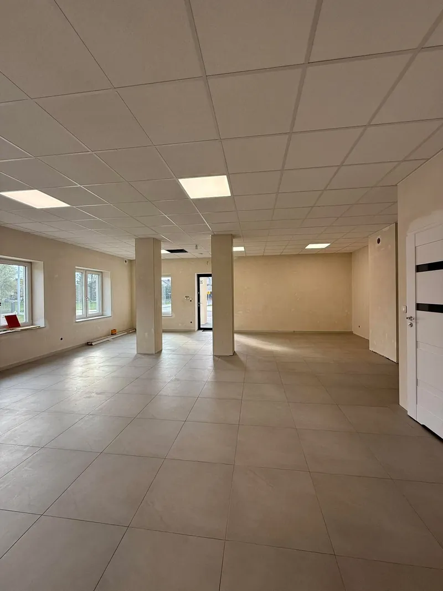
Do wynajęciaWejście bezpośrednio z ul. Zagłoby. Sala główna, część socjalna i WC — z możliwością wydzielenia dodatkowych pomieszczeń pod Twoją działalność.
Apartament nr 4 · Sprzedaż
498 750 zł
4 750 zł/m² · bezczynszowa własność
Apartament nr 4 przy ul. Chodkiewicza 2 w Sieradzu kosztuje 498 750 zł, czyli 4 750 zł za metr. Ma 105 m² na drugim piętrze: salon z aneksem kuchennym o powierzchni 30,5 m², trzy sypialnie, garderobę, dwie łazienki i korytarz. Lokal jest w stanie deweloperskim, z ogrzewaniem podłogowym na gaz ziemny i gotowymi przyłączami mediów.
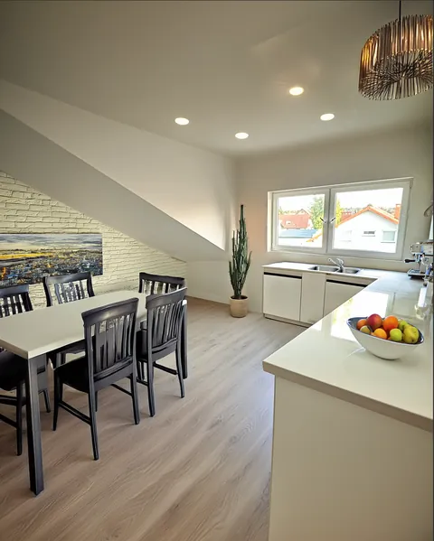
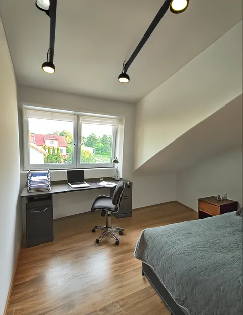
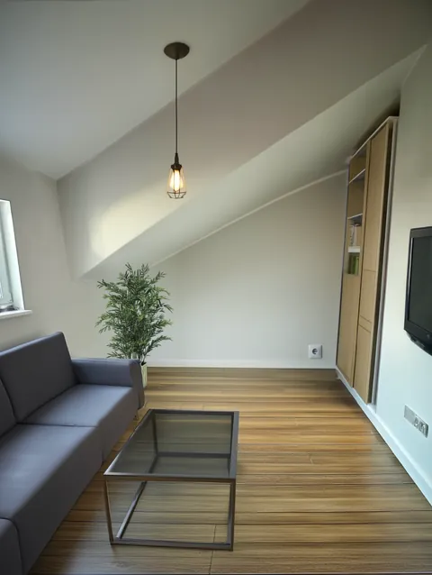
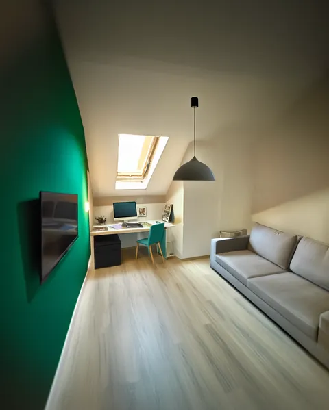
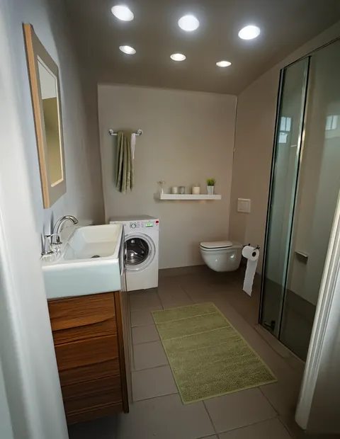
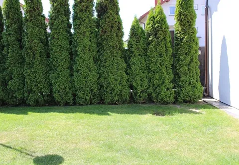
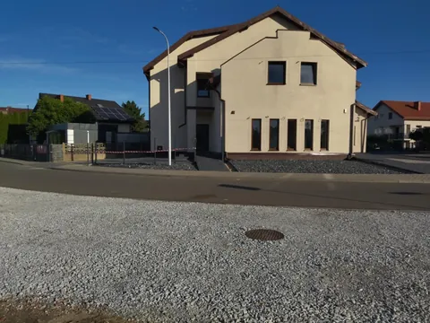
Przesuń, aby zobaczyć wszystkie zdjęcia · kliknij, aby powiększyć
Uwaga do zdjęć wnętrz. Zdjęcia apartamentu przedstawiają wizualizację możliwej aranżacji i mają charakter wyłącznie poglądowy. Lokal jest sprzedawany w stanie deweloperskim — meble i wykończenie widoczne na zdjęciach nie wchodzą w skład oferty. Zdjęcia budynku i otoczenia są rzeczywiste.
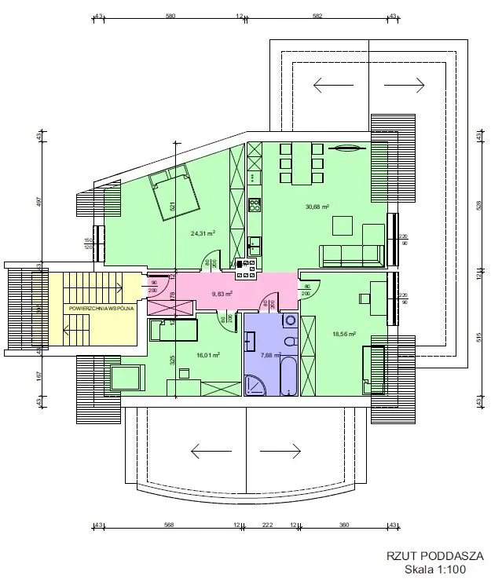
Lokal nr 1 · Wynajem
2 800 zł
miesięcznie · dostępny od zaraz
Lokal użytkowy nr 1 przy ul. Chodkiewicza 2 w Sieradzu jest do wynajęcia za 2 800 zł miesięcznie. Ma 86 m² na parterze budynku, wejście prowadzi bezpośrednio z ul. Zagłoby, a w środku znajdują się sala główna, część socjalna i WC. Przestrzeń można podzielić na osobne pomieszczenia zgodnie z potrzebami prowadzonej działalności — usługowej, biurowej lub handlowej.
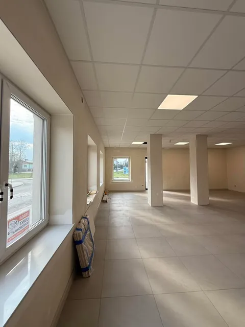
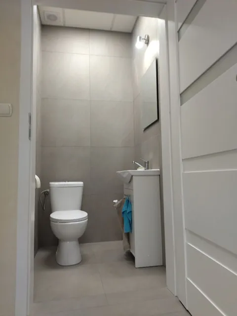
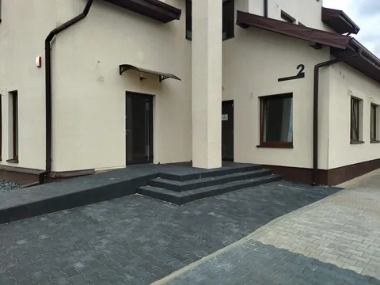
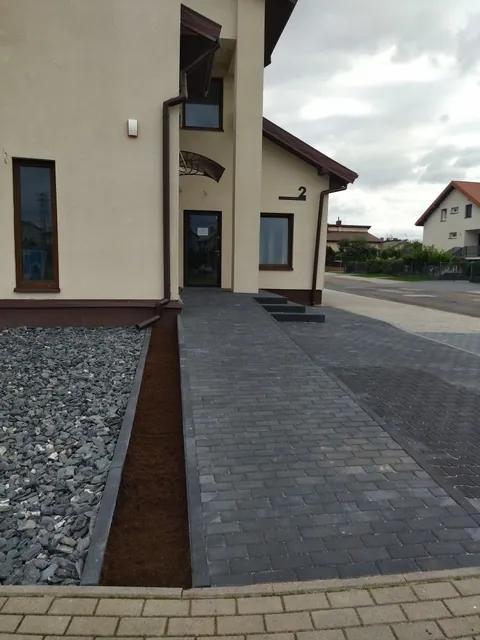
Przesuń, aby zobaczyć wszystkie zdjęcia · kliknij, aby powiększyć
Wsparcie najemcy
Każda działalność potrzebuje czegoś innego. Gabinet chce ciszy i osobnych pokoi, sklep — otwartej sali i dobrej witryny, biuro — zaplecza socjalnego. Dlatego układ lokalu nr 1 nie jest przesądzony: ustalamy go razem, zanim podpiszesz umowę.
Ile potrzebujesz pomieszczeń, gdzie ma być recepcja, czy potrzebne jest zaplecze albo osobne wejście dla pracowników.
Przechodzimy przez rzut i decydujemy, które ścianki działowe mają powstać, a co zostaje otwarte. Zakres prac i warunki zapisujemy w umowie.
Lokal trafia do Ciebie w ustalonym stanie — z gotowym WC, częścią socjalną, ogrzewaniem podłogowym, alarmem i światłowodem.
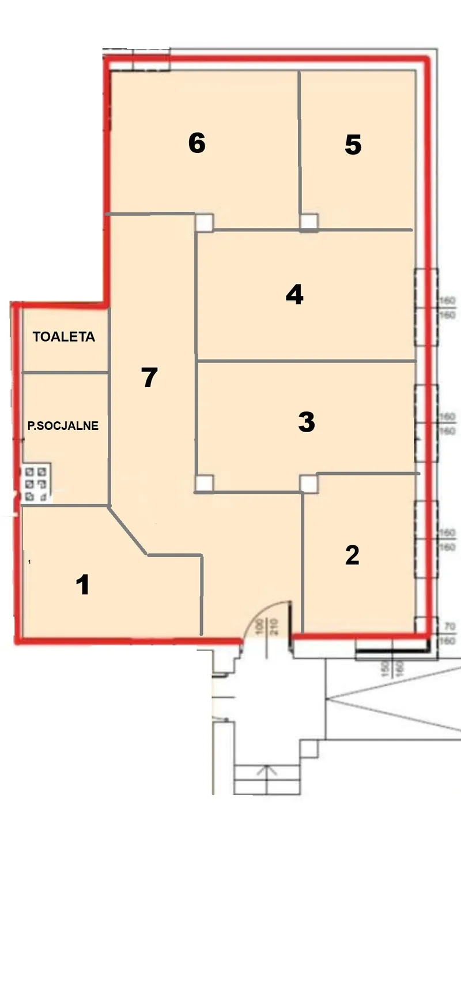
Rzut obok pokazuje jeden z możliwych wariantów: siedem osobnych pomieszczeń, toaletę i część socjalną z aneksem. To propozycja, a nie stan obecny — dziś lokal jest w większości otwartą salą.
Możesz zostawić przestrzeń otwartą, wydzielić dwa duże gabinety albo pójść w stronę pokazanego układu. Rozmawiamy o tym przed podpisaniem umowy, żeby nie było później niespodzianek po żadnej ze stron.
Lokalizacja
Budynek stoi na skrzyżowaniu ulic Chodkiewicza i Zagłoby w Sieradzu, w sąsiedztwie dużego skupiska zabudowy jednorodzinnej. To dobre miejsce dla działalności, która żyje z okolicznych mieszkańców — i spokojny adres dla kogoś, kto tu zamieszka.
Osiedle leży w pobliżu węzła Sieradz Zachód, który daje dogodny wjazd na drogę ekspresową S8 w kierunku Łodzi i Wrocławia.
Miejsca parkingowe znajdują się bezpośrednio przy budynku i mogą z nich korzystać najemca oraz jego klienci.
Wokół domy jednorodzinne i zabudowa mieszkaniowa — naturalne zaplecze klientów z sąsiednich ulic.
Zmodernizowana droga asfaltowa, chodnik po obu stronach ulicy, oświetlenie uliczne i dostęp do komunikacji miejskiej.
Budynek
Chodkiewicza 2 to budynek mieszkalno-usługowy: na parterze od strony ul. Zagłoby dwa lokale użytkowe, wyżej dwa apartamenty. Poniżej pełny stan na dziś — bez ukrywania tego, co już poszło.

02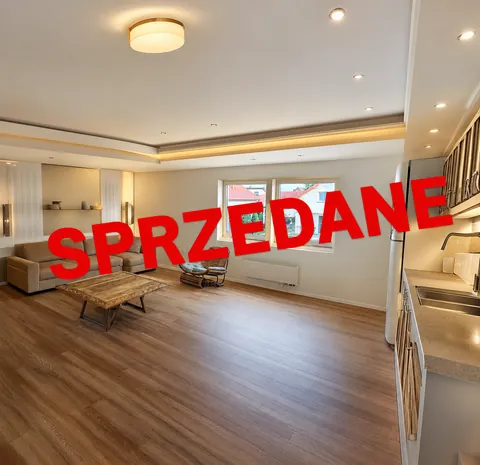
03Nie prowadzimy biura pośrednictwa z setką adresów. Mamy jeden budynek przy Chodkiewicza 2 i cztery lokale w nim — dzwoniąc pod 503 444 134 rozmawiasz z kimś, kto zna każdy metr tej nieruchomości, jej instalacje i sąsiedztwo.
Od dwóch lat kolejne lokale znajdują tu właścicieli i najemców. Lokal nr 2 wynajęliśmy studiu jogi, apartament nr 3 sprzedaliśmy. Zostały dwa — i to o nich jest cała ta strona.
Zanim podpiszesz
Wynajem lokalu albo zakup mieszkania to decyzja na lata. Poniżej cztery rzeczy, o które pytają nas najczęściej — i to, jak je u nas rozwiązujemy.
„Czy warunki są uczciwe?”
Czynsz, kaucję, okres wypowiedzenia i zakres prac adaptacyjnych omawiamy w całości, zanim cokolwiek podpiszesz. Nic nie pojawia się w umowie po cichu.
„Co, jeśli coś się zepsuje?”
Usterkę zgłaszasz pod 503 444 134 i rozmawiasz z osobą, która odpowiada za budynek — bez systemu zgłoszeń i przerzucania się działami.
„Czy czynsz nagle wzrośnie?”
Jeżeli czynsz miałby się kiedyś zmienić, tryb i granice tej zmiany są opisane w umowie od pierwszego dnia. Zależy nam na najemcy, który zostaje na lata.
„Zostanę sam po podpisaniu?”
Telefon i adres e-mail nie zmieniają się po podpisaniu umowy — ten sam numer obsługuje budynek na co dzień, nie tylko na etapie szukania najemcy.
Pytania i odpowiedzi
Apartament nr 4 kosztuje 498 750 zł, czyli 4 750 zł za metr kwadratowy. Ma 105 m² i znajduje się na II piętrze. Jest to bezczynszowa własność z udziałem w nieruchomości gruntowej i częściach wspólnych.
Czynsz najmu lokalu nr 1 to 2 800 zł miesięcznie. Lokal ma 86 m² na parterze, z osobnym wejściem od ul. Zagłoby, i jest dostępny od zaraz. Warunki dotyczące kaucji, mediów i okresu wypowiedzenia ustalamy przed podpisaniem umowy.
Lokal ma wykonane tynki (Knauf Diamant), wylewki z ogrzewaniem podłogowym, instalacje elektryczne oraz wodno-kanalizacyjne, okna KBE z pakietem trzyszybowym i ocieplony wełną Rockwool sufit. Do wykonania pozostaje wykończenie: podłogi, malowanie, biały montaż, drzwi wewnętrzne i kuchnia.
Tak. Przestrzeń 86 m² jest dziś w większości otwartą salą i można w niej wydzielić dodatkowe pomieszczenia. W galerii znajduje się rzut z przykładową propozycją podziału — siedem pomieszczeń, toaleta i część socjalna. Zakres zmian ustalamy wspólnie i zapisujemy w umowie.
Lokal nadaje się pod działalność usługową, biurową lub handlową — w zależności od sposobu aranżacji przestrzeni. W tym samym budynku, w lokalu nr 2, działa studio jogi. Jeśli masz wątpliwości, czy Twój profil tu pasuje, zadzwoń pod 503 444 134.
Tak. Przy budynku znajdują się prywatne miejsca parkingowe, z których może korzystać najemca oraz jego klienci. Dojście od parkingu do wejścia lokalu jest utwardzone kostką brukową.
Tak, lokal daje duże możliwości zewnętrznego oznakowania działalności — elewacja od strony ulicy jest dobrze widoczna z drogi. Najemca lokalu nr 2 ma na niej pełnowymiarowy baner reklamowy, który widać na zdjęciach budynku.
W obu wolnych lokalach jest ogrzewanie podłogowe zasilane gazem ziemnym, woda, kanalizacja i energia elektryczna. Lokal użytkowy ma doprowadzony internet światłowodowy, a w apartamencie istnieje możliwość podłączenia światłowodu.
Nie. Zdjęcia wnętrz apartamentu to wizualizacja możliwej aranżacji i mają charakter wyłącznie poglądowy — lokal sprzedawany jest w stanie deweloperskim, bez mebli i wykończenia widocznego na zdjęciach. Zdjęcia lokalu użytkowego, budynku i otoczenia przedstawiają stan rzeczywisty.
Nie. Z czterech lokali dostępne są dwa: apartament nr 4 (105 m², na sprzedaż) oraz lokal użytkowy nr 1 (86 m², do wynajęcia). Lokal nr 2 o powierzchni 52 m² jest wynajęty, a apartament nr 3 o powierzchni 130 m² na I piętrze został sprzedany.
Najszybciej telefonicznie: 503 444 134. Możesz też wypełnić formularz poniżej albo napisać na robertsieradz@wp.pl — termin prezentacji ustalamy indywidualnie, także po godzinach pracy.
Kontakt
Najszybciej odpowiadamy na telefon. Jeśli wolisz napisać — wypełnij formularz, a odezwiemy się z terminem prezentacji.
ul. Chodkiewicza 2
98-200 Sieradz
Wolne w tej chwili
Stan ofert:
Dane osobowe
Kto przetwarza Twoje dane
Administratorem danych jest Nieruchomości Chodkiewicza 2, ul. Chodkiewicza 2, 98-200 Sieradz. Kontakt w sprawie danych: robertsieradz@wp.pl, tel. 503 444 134.
Jakie dane zbieramy i po co
Wyłącznie te, które sam wpiszesz w formularzu kontaktowym: imię i nazwisko, adres e-mail, opcjonalnie numer telefonu oraz treść wiadomości. Używamy ich tylko po to, żeby odpowiedzieć na zapytanie i ewentualnie umówić prezentację nieruchomości — na podstawie art. 6 ust. 1 lit. b i f RODO. Nie tworzymy profili, nie prowadzimy newslettera i nie wykorzystujemy tych danych do reklam.
Komu je przekazujemy
Stroną utrzymuje Cloudflare, który — jak każdy serwer — zapisuje techniczne logi żądań. Wiadomość z formularza trafia do skrzynki właściciela; jeśli Twoja przeglądarka nie zdoła wysłać jej przez stronę, otwiera się Twój własny program pocztowy i wiadomość wysyłasz samodzielnie. Poza tym nie przekazujemy danych nikomu i nie sprzedajemy ich.
Pliki cookie i usługi zewnętrzne
Ta strona nie zakłada własnych plików cookie, nie zbiera statystyk odwiedzin i nie korzysta z narzędzi śledzących. Czcionki są hostowane na tym samym serwerze co strona, więc ich pobranie nie wysyła żadnych danych na zewnątrz. Jedynym elementem zewnętrznym jest osadzona mapa Google w sekcji „Lokalizacja” — jej wyświetlenie oznacza połączenie z serwerami Google, które mogą zapisać Twój adres IP i własne pliki cookie na zasadach opisanych w polityce prywatności Google.
Jak długo przechowujemy dane
Przez czas potrzebny do obsługi zapytania, a jeśli dojdzie do rozmów o umowie — przez okres wymagany przepisami. Możesz w każdej chwili poprosić o usunięcie wcześniej.
Twoje prawa
Masz prawo dostępu do swoich danych, ich sprostowania, usunięcia, ograniczenia przetwarzania, przeniesienia oraz wniesienia sprzeciwu. Napisz na robertsieradz@wp.pl — odpowiemy najszybciej, jak się da. Przysługuje Ci też skarga do Prezesa Urzędu Ochrony Danych Osobowych, ul. Stawki 2, 00-193 Warszawa.
Ostatnia aktualizacja: 19 sierpnia 2026.